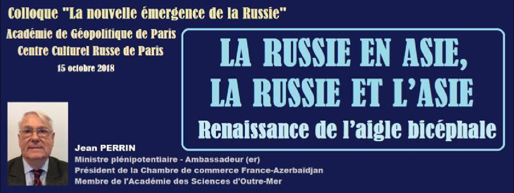
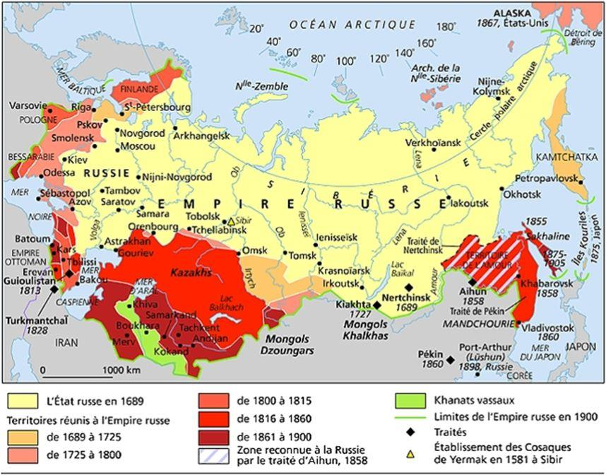
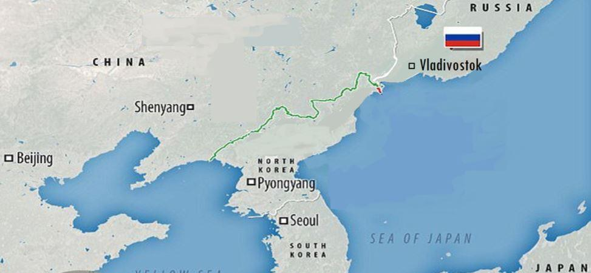

La Russie en Asie, la Russie et l’Asie : Renaissance de l’aigle bicéphale
par Jean PERRIN

J’ai intitulé cet exposé « La Russie en Asie, la Russie et l’Asie » parce que le poids de la politique étrangère de la Russie et ses rapports avec les nations asiatiques sont indissociables du développement de ses territoires sibériens et extrême-orientaux.
En 1991, la dissolution de l’URSS a créé un choc pour ses populations, provoquant des mouvements migratoires portant sur plus de 20 millions de personnes. D’où la remarque de Vladimir Poutine en avril 2005, qui la qualifia de plus grande catastrophe du siècle, souvent interprétée de façon erronée ou biaisée à l’étranger. L’espace russe s’est trouvé ainsi réduit à ce qu’était la Russie avant Pierre le Grand.
Dans les républiques fédérées, certains avaient l’impression de ne plus avoir de patrie. Ce cataclysme a affecté profondément la vie des particuliers, à la fois au plan matériel et au plan psychologique. Dans la plus grande partie du territoire de l’URSS cette issue n’était pas souhaitée. La période qui a suivi a été une période de confusion car le ressort était cassé.
En Sibérie orientale1, on a senti les effets de cette confusion et en particulier l’abandon de territoires éloignés auxquels l’administration centrale n’avait plus l’air de s’intéresser. A Moscou, des services de l’État n’avaient plus d’argent pour entreprendre. Les observateurs étrangers s’interrogeaient sur les chances d’éclatement de la Russie elle-même.
On doit la réémergence de la Russie à Vladimir Poutine, qui a rétabli l’ordre à l’intérieur du pays et qui a fait de celui-ci une puissance avec laquelle il faut de nouveau compter. Après les errements de la période Gorbatchev et des années 1990, il a fallu refondre un service diplomatique sinistré.
Des hommes comme le grand spécialiste du Moyen-Orient et ancien Premier ministre Evguéni Primakov ont redonné un sens à la politique de la Russie. Aujourd’hui, le pays peut s’enorgueillir d’avoir un ministre des Affaires Étrangères exceptionnel comme Serguei Lavrov et une porte-parole comme Maria Zakharova. Grâce à de telles personnalités, la Russie a retrouvé sa place dans le monde.
Le président Poutine a senti qu’il fallait faire porter ses efforts sur le développement de l’est sibérien, négligé au cours des dix années précédentes. En effet, pour avoir une politique étrangère digne de ce nom et entretenir un dialogue constructif avec ses voisins asiatiques, la Russie devait et doit renforcer son action dans ses propres territoires de l’Extrême-Orient. Ces dernières années, il a même été question de transférer la capitale de Moscou à Novosibirsk.
Le sous-sol de ces régions renferme des richesses inestimables dont beaucoup n’ont pas été répertoriées. Pour les mettre en valeur il faut des hommes et il faut des capitaux. Or l’abandon du système soviétique a entraîné une désorganisation des structures étatiques et provoqué un exode de populations qui a continué à ce jour. Dans les années 1990, des villages de Yakoutie ont été regroupés parce qu’ils ne pouvaient plus être ravitaillés. La population de l’Extrême-Orient est ainsi passée de 8 à 6 millions d’habitants.
Le président Poutine a compris l’importance de ce problème. En 2012, il a créé un ministère du Développement de l’Extrême-Orient. En 2013 il a déclaré que le développement de cette région était la « priorité nationale du XXI° siècle » et à cet effet il a nommé un représentant spécial en la personne de Youri Troutnev. Un programme de « développement économique et social pour l’Extrême-Orient et la région du Baïkal jusqu’en 2025 » a été adopté.
Bien sûr, des problèmes de priorité financière se posent, surtout depuis qu’il a fallu affecter de nouveaux crédits au réaménagement de la Crimée. C’est ainsi que le projet de construction d’un pont entre le continent et Sakhaline est en suspens dans l’attente d’un arbitrage.
Pour remédier au déficit de population, le gouvernement a entrepris en 2016 d’accorder des lopins de terre d’un hectare aux candidats qui accepteraient de s’installer sur des terres cultivables. Cette expérience n’a pas connu le succès escompté, faute d’accompagnement technique et financier. Les espaces sibériens et tout particulièrement la vallée de l’Amour, sont propices à la création de grandes exploitations, beaucoup plus rentables. Les Chinois, qui y produisent déjà près d’un million de tonnes de soja par an, envisagent d’y mettre en culture un million d’hectares.
Parallèlement, le port de Vladivostok a connu une grande expansion en instaurant des zones franches. Un pont à haubans, inauguré en 2012, a été construit entre la ville et l’île Rousski qui lui fait face, et depuis 2010 l’université de Vladivostok accueille des étudiants d’Asie.
Pour la 4ème fois cette année, Vladivostok a été l’hôte d’un Forum Economique Oriental auquel ont participé notamment, aux côtés de Vladimir Poutine, le président chinois Xi Jinping, le président Battulgi de Mongolie et les Premiers ministres du Japon Shinzo Abe et Li Nak Yong de Corée du Sud. Le gouvernement envisage maintenant de transférer la capitale de cette région de Khabarovsk à Vladivostok.
En effet, dès le début de son mandat, le président Poutine a jugé primordial de resserrer les liens avec les pays asiatiques dont la Russie est voisine, et tout d’abord avec la Chine, le Japon et la Corée. Elle joue un rôle de premier plan dans l’Organisation de Coopération de Shanghai à laquelle ont été associés l’Inde et le Pakistan.
La Russie partage avec la Chine 3500 km de frontière. Pendant longtemps cette frontière a été contestée et en 1969 des incidents meurtriers avaient éclaté avec des garde-frontières chinois. À l’époque de Mao Tse Toung, la Chine contestait même à la Russie la qualité de puissance asiatique. Depuis, les relations se sont apaisées et le mérite revient à Vladimir Poutine d’avoir négocié avec ce grand voisin la délimitation de cette frontière, intervenue en 2005. Le président russe n’a pas attendu les sanctions américaines et européennes de 2014 pour s’engager dans une politique de partenariat étroit avec la Chine. Le président Xi Jinping et lui se rencontrent fréquemment. Déjà en juin 2012 les deux États avaient décidé de mettre en place une « architecture de sécurité et de développement stable » dans la zone Asie-Pacifique. De grands contrats pétroliers et gaziers ont été conclus. Pour des raisons stratégiques (éventuel blocus américain), la Chine » donne la préférence à la voie continentale par rapport aux voies maritimes du sud de l’Asie.
Pékin s’est de son côté engagé dans une grande offensive économique à travers le continent eurasiatique qui a reçu le nom de « nouvelles routes de la soie ». De son côté, en 2015, la Russie a créé avec la Biélorussie, le Kazakhstan, le Kirghizstan et l’Arménie une Union Économique Eurasiatique, que l’on s’attache à harmoniser avec le projet chinois (сопряжение).
Malgré l’absence d’un traité de paix entre la Russie et le Japon, les deux pays éprouvent le besoin de dialoguer et de se rapprocher. Cependant les investissements japonais marquent le pas et la méfiance subsiste. Le Japon continue à revendiquer les îles Kouriles du Sud qui lui ont été reprises avec le reste de l’archipel en 1945. Les conversations se poursuivent néanmoins à la suite du compromis trouvé en 1956 entre Nikita Khrouchtchev et le Premier ministre de l’époque, Hatoyama Ichiro. Cependant, ces dernières années la Russie a renforcé ses infrastructures et ses défenses sur les Kouriles au grand dam des Japonais. En septembre 2018, au Forum Économique Oriental de Vladivostok, Vladimir Poutine a proposé la signature d’un traité de paix sans que soit réglé le problème des Kouriles. Il n’est pas question en effet pour la Russie de céder un pouce de son territoire à un pays membre d’une alliance militaire avec les États-Unis.
Les relations de la Russie avec la Corée, avec laquelle elle a une frontière commune, sont anciennes. En 1895, le dernier roi de Corée avait trouvé refuge à la légation de Russie après l’assassinat par les Japonais de la reine Min l’année précédente. Aujourd’hui, la Russie milite activement pour la dénucléarisation de toute la péninsule coréenne pour y instaurer un mécanisme de sécurité collective et aboutir enfin à la paix. Le président de la Corée du Sud Moon Jae-in a une attitude positive envers la Russie et récemment il a exprimé l’espoir de s’y rendre un jour par le train quand la ligne de chemin de fer serait rétablie entre le sud et le nord de la péninsule.
Les échanges commerciaux de la Russie se sont accrus de façon sensible en 2017 avec la Chine et la Corée du Sud, et dans une moindre mesure avec le Japon. En même temps, la Russie maintient depuis longtemps une politique de coopération avec des pays comme l’Inde, la Malaisie et le Vietnam.
Comment analyser le tournant de la Russie vers l’Est ?
C’est une politique mûrement réfléchie et accélérée seulement par les sanctions imposées par les occidentaux, mais pour la Russie il ne s’agit pas de tourner le dos à l’Europe comme on a pu l’entendre.
En Russie même, la politique eurasiatique du président Poutine n’est pas toujours comprise et la notion même d’Eurasie est contestée dans des milieux que l’on pourrait qualifier d’ »occidentalistes » ou tout simplement de fonctionnaires ou politiciens sans vision de l’avenir, alors que le centre géographique de la Russie est situé dans l’Altaï. Le débat n’est pas nouveau. Certains, comme chez nous d’ailleurs, ont de la peine à intégrer l’idée que le soleil se lève à l’est. On assiste aujourd’hui à la renaissance de l’aigle bicéphale.
J.P.
NDLR :
1. La Sibérie orientale, où Jean Perrin se trouvait en 1991 et 1992 dans le cadre de missions scientifiques.
Partager cette page